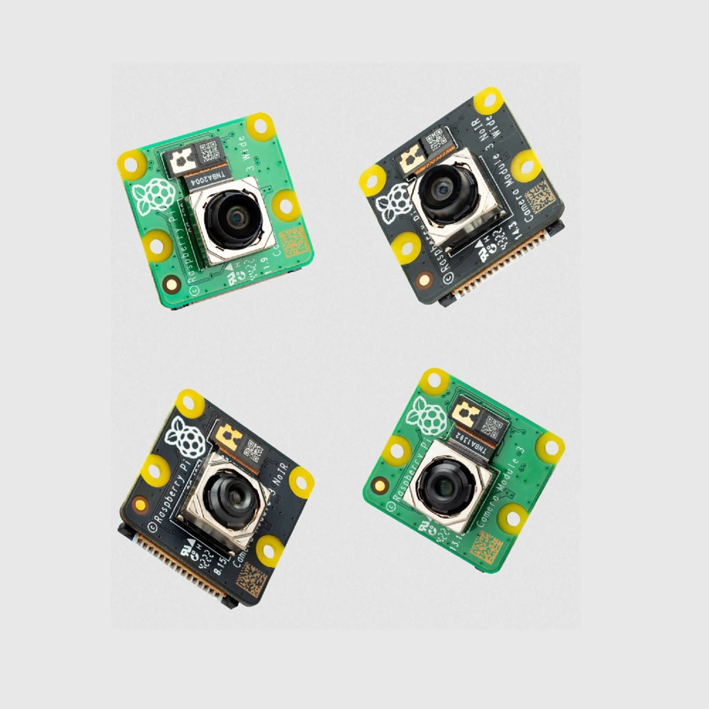

As aquaculture practices become increasingly important for sustainability, our project offers an innovative solution for real-time monitoring of fish health and behavior. Our cost-effective system, powered by a Raspberry Pi microcontroller and equipped with a camera, temperature and pH sensors, fills the gap in the market. With applications in aquaculture, research, environmental monitoring, education, and recreational fishing, our system offers a comprehensive solution. Our AI-powered camera feed constantly monitors fish behavior and movement, while our user-friendly interface provides easy-to-use controls for data monitoring and analysis. With our system, potential issues or abnormalities in the fish environment can be quickly identified and addressed. Join us in advancing aquaculture practices with our cutting-edge technology!